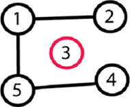
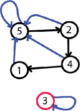
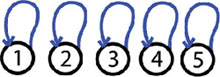
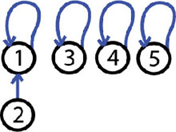
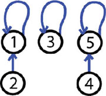
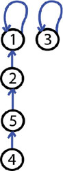

Member Search

|
Introduction
Many times the efficiency of an algorithm depends on the data structures
used in the algorithm. A wise choice in the structure you use in
solving a problem can reduce the time of execution, the time to
implement the algorithm and the amount of memory used. During SRM
competitions we are limited to a time limit of 2 seconds and 64 MB of
memory, so the right data structure can help you remain in competition.
While some Data Structures have been covered before, in this article we'll focus on data structures for disjoint sets.
The problem
Let’s consider the following problem: In a room are N persons, and we
will define two persons are friends if they are directly or indirectly
friends. If A is a friend with B, and B is a friend with C, then A is a
friend of C too. A group of friends is a group of persons where any two
persons in the group are friends. Given the list of persons that are
directly friends find the number of groups of friends and the number of
persons in each group. For example N = 5 and the list of friends is:
1-2, 5-4, and 5-1. Here is the figure of the graph that represents the
groups of friends. 1 and 2 are friends, then 5 and 4 are friends, and
then 5 and 1 are friends, but 1 is friend with 2; therefore 5 and 2 are
friends, etc.

In the end there are 2 groups of friends: one group is {1, 2, 4, 5}, the other is {3}.
The solution
This problem can be solved using BFS,
but let’s see how to solve this kind of problem using data structures
for disjoint sets. First of all: a disjoint-set data structure is a
structure that maintains a collection S1, S2, S3, …, Sn of dynamic
disjoint sets. Two sets are disjoint if their intersection is null. For
example set {1, 2, 3} and set {1, 5, 6} aren’t disjoint because they
have in common {1}, but the sets {1, 2, 3} and {5, 6} are disjoint
because their intersection is null. In a data structure of disjoint sets
every set contains a representative, which is one member of the set.
Let’s see how things will work with sets for the example of the problem. The groups will be represented by sets, and the representative of each group is the person with the biggest index. At the beginning there are 5 groups (sets): {1}, {2}, {3}, {4}, {5}. Nobody is anybody’s friend and everyone is the representative of his or her own group.
The next step is that 1 and 2 become friends, this means the group containing 1 and the group with 2 will become one group. This will give us these groups: {1, 2} , {3}, {4}, {5}, and the representative of the first group will become 2. Next, 5 and 4 become friends. The groups will be {1,2}, {3}, {4, 5}. And in the last step 5 and 1 become friends and the groups will be {1, 2, 4, 5}, {3}. The representative of the first group will be 5 and the representative for second group will be 3. (We will see why we need representatives later). At the end we have 2 sets, the first set with 4 elements and the second with one, and this is the answer for the problem example: 2 groups, 1 group of 4 and one group of one.
Perhaps now you are wondering how you can check if 2 persons are in the same group. This is where the use of the representative elements comes in. Let’s say we want to check if 3 and 2 are in the same group, we will know this if the representative of the set that contains 3 is the same as the representative of the set that contains 2. One representative is 5 and the other one is 3; therefore 3 and 2 aren’t in same groups of friends.
Some operations
Let’s define the following operations:
- CREATE-SET(x) – creates a new set with one element {x}.
- MERGE-SETS(x, y) – merge into one set the set that contains element x and the set that contains element y (x and y are in different sets). The original sets will be destroyed.
- FIND-SET(x) – returns the representative or a pointer to the representative of the set that contains element x.
The solution using these operations
Let’s see the solution for our problem using these operations:
Read N; for (each person x from 1 to N) CREATE-SET(x) for (each pair of friends (x y) ) if (FIND-SET(x) != FIND-SET(y)) MERGE-SETS(x, y)
Now if we want to see if 2 persons (x, y) are in same group we check if FIND-SET(x) == FIND-SET(y).
We will analyze the running time of the disjoint-set data structure in terms of N and M, where N is the number of times that CREATE-SET(x) is called and M is the total number of times that CREATE-SET(x), MERGE-SETS(x, y) and FIND-SET(x) are called. Since the sets are disjoint, each time MERGE-SETS(x, y) is called one set will be created and two will be destroyed, giving us one less set. If there are n sets after n-1 calls of MERGE-SETS(x,y) there will remain only one set. That’s why the number of MERGE-SETS(x,y) calls is less than or equal to the number of CREATE-SET(x) operations.
Implementation with linked lists
One way to implement disjoint set data structures is to represent each
set by a linked list. Each element (object) will be in a linked list and
will contain a pointer to the next element in the set and another
pointer to the representative of the set. Here is a figure of how the
example of the problem will look like after all operations are made. The
blue arrows are the pointers to the representatives and the black
arrows are the pointers to the next element in the sets. Representing
sets with linked lists we will obtain a complexity of O(1) for
CREATE-SET(x) and FIND-SET(x). CREATE-SET(x) will just create a new
linked list whose only element (object) is x, the operation FIND-SET(x)
just returns the pointer to the representative of the set that contains
element (object) x.

Now let’s see how to implement the MERGE-SETS(x, y) operations. The easy way is to append x’s list onto the end of y’s list. The representative of the new set is the representative of the original set that contained y. We must update the pointer to the representative for each element (object) originally on x’s list, which takes linear time in terms of the length of x’s list. It’s easy to prove that, in the worst case, the complexity of the algorithm will be O(M^2) where M is the number of operations MERGE-SETS(x, y). With this implementation the complexity will average O(N) per operation where N represents the number of elements in all sets.
The “weighted union heuristic”
Let’s see how a heuristic will make the algorithm more efficient. The
heuristic is called “a weighted-union heuristic." In this case, let’s
say that the representative of a set contains information about how many
objects (elements) are in that set as well. The optimization is to
always append the smaller list onto the longer and, in case of ties,
append arbitrarily. This will bring the complexity of the algorithm to
O(M + NlogN) where M is the number of operations (FIND-SET, MERGE-SETS,
CREATE-SETS) and N is the number of operations CREATE-SETS. I will not
prove why the complexity is this, but if you are interested you can find
the proof in the resources mentioned at the end of the article.
So far we reach an algorithm to solve the problem in O(M + NlogN) where N is the number of persons and M is the number of friendships and a memory of O(N). Still the BFS will solve the problem in O(M + N) and memory of O(N + M). We can see that we have optimized the memory but not the execution time.
Next step: root trees
The next step is to see what we can do for a faster implementation of
disjoint set data structures. Let’s represent sets by rooted trees, with
each node containing one element and each tree representing one set.
Each element will point only to its parent and the root of each tree is
the representative of that set and its own parent. Let’s see, in steps,
how the trees will look for the example from the problem above.
Step 1: nobody is anybody friend

We have 5 trees and each tree has a single element, which is the root and the representative of that tree.
Step 2: 1 and 2 are friends, MERGE-SETS(1, 2):

The operation made is MERGE-SETS(1, 2). We have 4 trees one tree contain 2 elements and have the root 1. The other trees have a single element.
Step 3: 5 and 4 are friends, MERGE-SETS(5, 4)

The operation made is MERGE-SETS(5, 4). Now we have 3 trees, 2 trees with 2 elements and one tree with one element.
Step 4: 5 and 1 are friends, MERGE-SETS(5, 1)

The operation made is MERGE-SETS(5, 1). Now we have 2 trees, one tree has 4 elements and the other one has only one element.
As we see so far the algorithm using rooted trees is no faster than the algorithm using linked lists.
Two heuristics
Next we will see how, by using two heuristics, we will achieve the
asymptotically fastest disjoint set data structure known so far, which
is almost linear in terms of the number of operations made. These two
heuristics are called “union by rank” and “path compression.” The idea in the first heuristic “union by rank” is to make the root of the tree with fewer nodes point to the root of the tree with more nodes. For each node, we maintain a rank that
approximates the logarithm of the sub-tree size and is also an upper
bound on the height of the node. When MERGE-SETS(x, y) is called, the
root with smaller rank is made to point to the root with larger rank.
The idea in the second heuristic “path compression,”
which is used for operation FIND-SET(x), is to make each node on the
find path point directly to the root. This will not change any ranks.
To implement a disjoint set forest with these heuristics, we must keep track of ranks. With each node x, we keep the integer value rank[x], which is bigger than or equal to the number of edges in the longest path between node x and a sub-leaf. When CREATE-SET(x) is called the initial rank[x] will be 0. When a MERGE-SETS(x, y) operation is made then the root of higher rank will become the parent of the root of lower rank – or, in case of tie, we arbitrarily choose one of the roots as the parent and increment its rank.
Let’s see how the algorithm will look.
Let P[x] = the parent of node x. CREATE-SET(x) P[x] = x rank[x] = 0 MERGE-SETS(x, y) PX = FIND-SET(X) PY =FIND-SET(Y) If (rank[PX] > rank[PY]) P[PY] = PX Else P[PX] = PY If (rank[PX] == rank[PY]) rank[PY] = rank[PY] + 1
And the last operation looks like:
FIND-SET(x) If (x != P[x]) p[x] = FIND-SET(P[X]) Return P[X]
Now let’s see how the heuristics helped the running time. If we use only the first heuristic “union by rank” then we will get the same running time we achieved with the weighted union heuristic when we used lists for representation. When we use both “union by rank” and “path compression,” the worst running time is O( m α(m,n)), where α(m,n) is the very slowly growing inverse of Ackermann’s function. In application α(m,n) <= 4 that’s why we can say that the running time is linear in terms of m, in practical situations. (For more details on Ackermann’s function or complexity see the references below.)
Back to the problem
The problem from the beginning of the article is solvable in O(N + M)
and O(N) for memory using disjoint-set data structure. The difference
for time execution is not big if the problem is solved with BFS, but we
don’t need to keep in memory the vertices of the graph. Let’s see if the
problem was like: In a room are N persons and you had to handle Q
queries. A query is of the form “x y 1,” meaning that x is friends with
y, or “x y 2” meaning that we are asked to output if x and y are in same
group of friends at that moment in time. In this case the solution with
disjoint-set data structure is the fastest, giving a complexity of O(N +
Q).
Practice
Disjoint-set data structures are a helpful tool for use in different
algorithms, or even for solving problems in an SRM. They are efficient
and use small amount of memory. They are useful in applications like
“Computing the shorelines of a terrain,” “Classifying a set of atoms
into molecules or fragments,” “Connected component labeling in image
analysis,” and others.
To practice what you've learned, try to solve GrafixMask – the Division 1 500 from SRM211. The idea is to keep track of all the blocks and consider each grid point as a node. Next, take all the nodes that aren’t blocked and let (x, y) be the coordinate of the left, right, down or up node, and if (x, y) is not blocked then you do the operation MERGE-SETS(node, node2). You should also try to determine how disjoint-set data structures can be used in the solution of RoadReconstruction from SRM 356. Disjoint-set data structures can also be used in TopographicalImage from SRM 210 and PathFinding, from SRM 156.
I hope you find this data structure to be useful. Good luck in the Arena!
References:
- Thomas H. Cormen, Introduction to Algorithms
- en.wikipedia.org/wiki/Disjoint-set_data_structure
- en.wikipedia.org/wiki/Ackermann_function